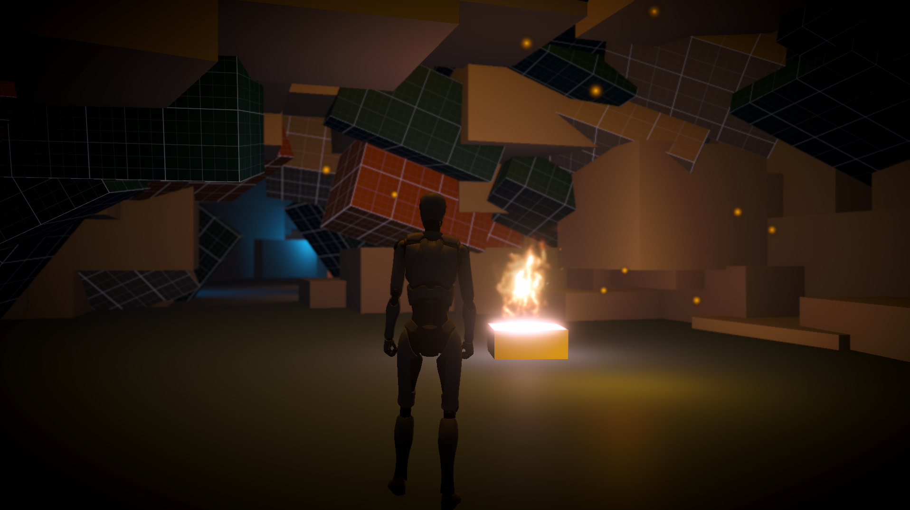
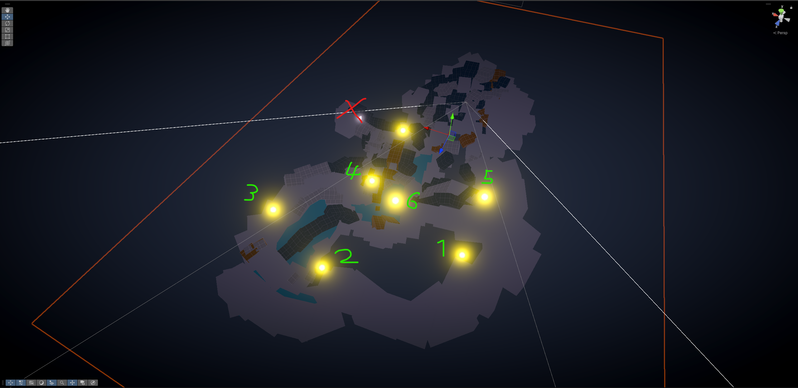
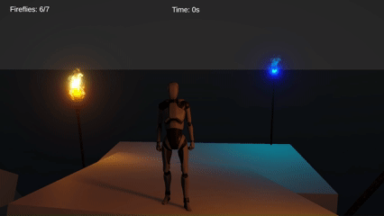
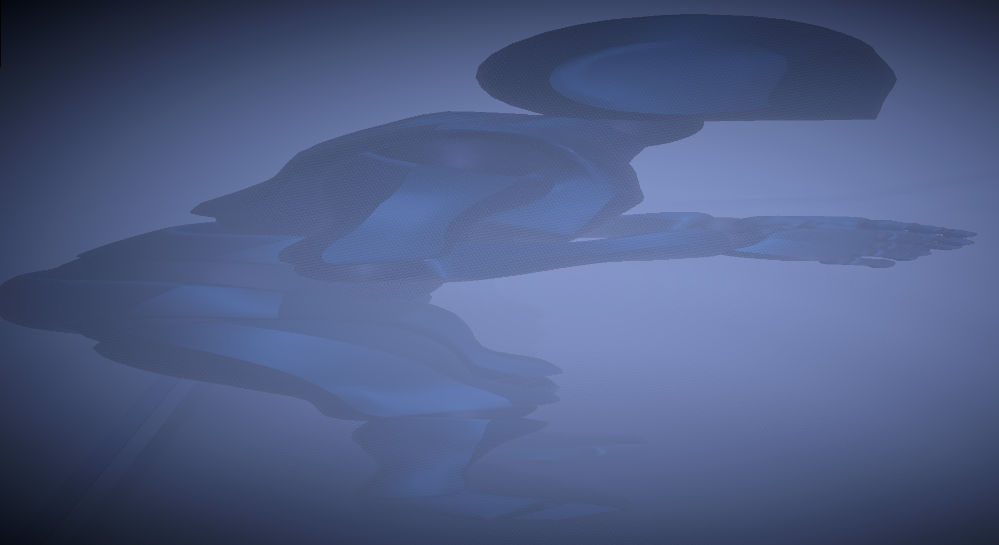
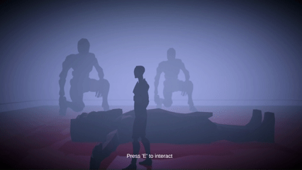
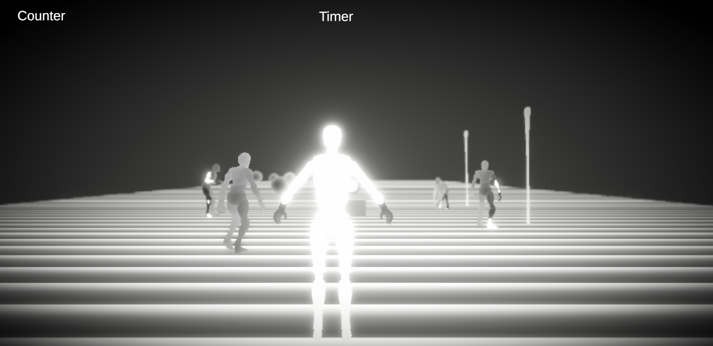
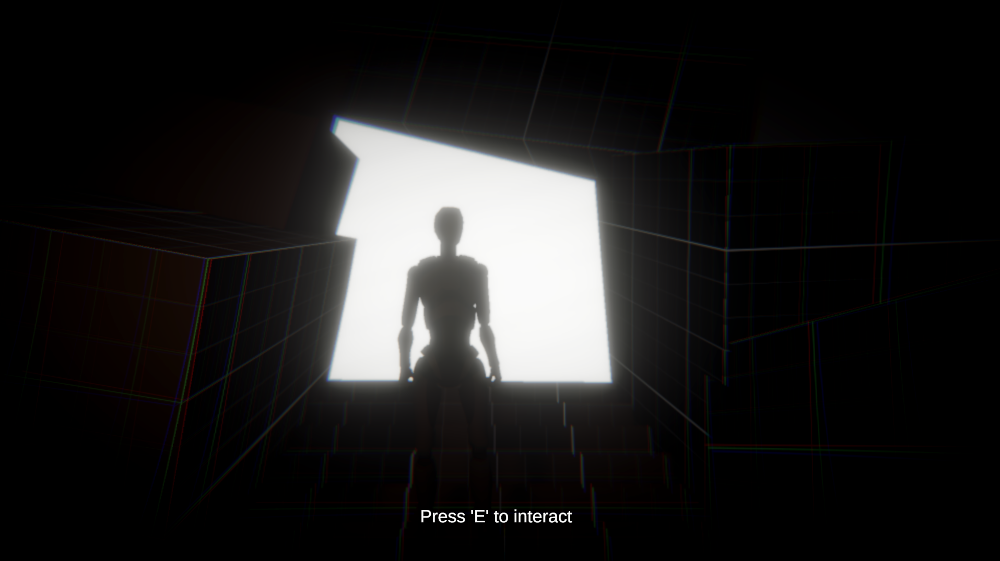

Project Status: Finished
Project Type: Solo
Duration: 7 days
Software Used: Unity
Languages Used: C#, HLSL
First Spark is a short experimental game inspired by the concept of Homo Ludens —
“the playing human.”
The game invites players to explore without explicit instructions,
relying purely on instinct and environmental cues.
GitHub
Trigger Warning: Volume might be loud.
You begin as a primitive human inside a dark cave, your fire extinguished.
The world is obscured in shadow and mist,
pushing you to move forward guided only by faint glimmers of light.
This gradual transition — from almost complete darkness to a blindingly bright finale
— is intentional, reflecting the idea of finding the “light” within yourself.
The First Spark:

The concept was born from the metaphor of losing something essential and instinctively searching to reclaim it — just as ancient humans would guard their fire. This primal urge is paired with modern design sensibilities to create a layered, symbolic experience.





First Spark is aimed at players who enjoy atmospheric, symbolic experiences and are willing to explore without being told exactly what to do.
If I had more time, I would:

First Spark is a small but complete prototype — museum-worthy in its symbolism and design intent — and a personal exploration of how play, instinct, and meaning intersect.